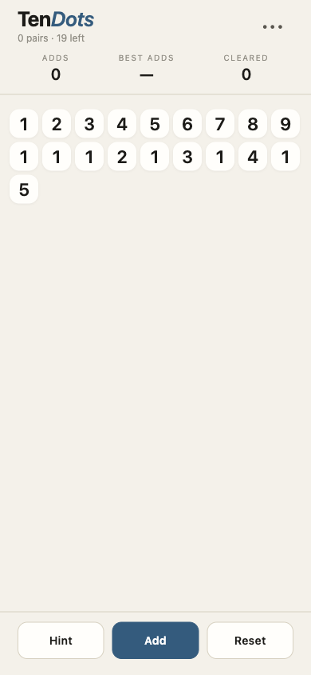
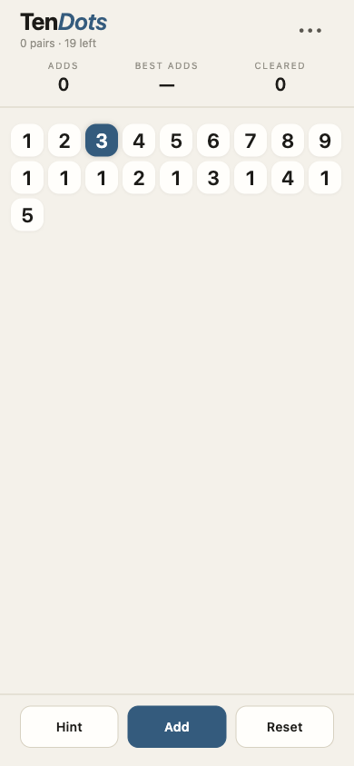

9-wide board
Opens with the standard 19-number seed laid out left-to-right, top-to-bottom — the classic Take Ten opening.
Now in beta · iOS via Expo Go
A quiet number puzzle for iPhone in the spirit of the pen-and-paper classic. Tap two numbers that match or sum to ten. Clear the board in the fewest adds.
Offline-firstNo adsNo accountsOpen source
Features
The whole feature set, plainly listed — no upsells gating the basics.
Opens with the standard 19-number seed laid out left-to-right, top-to-bottom — the classic Take Ten opening.
Two cells match if they're consecutive in reading order, same column, or on a diagonal — with only crossed-out cells between them.
The two cells must be either equal in value OR sum to ten (1+9, 2+8, 3+7, 4+6, 5+5).
Tap Hint to highlight one valid pair. Picks brute-force from all live cells; if none exist, opens the No pairs left dialog.
When you're stuck, Add appends the remaining live numbers to the bottom. The fewer adds it takes you to clear, the better.
Best score is the smallest adds-to-clear you've achieved. Total clears are also tracked. No leaderboard server.
How to play
A few short steps. The app gets out of your way after that.
First tap selects the cell — it turns accent-color. Tap it again to deselect.
If the two cells form a valid pair (same or sum-to-10, adjacent per the three rules), both cross out. If not, the new tap becomes the new selection.
The subtitle counts pairs cleared and how many cells are still live. The board never erases — crossed cells stay greyed.
Hint highlights one valid pair. Use it to learn the adjacency rules without spoiling too much.
When no more pairs exist, tap Add. The remaining live cells are copied to the bottom and the game continues. Try to clear the board in the fewest adds.
Screenshots
Captured from the running app at iPhone 14 viewport.

